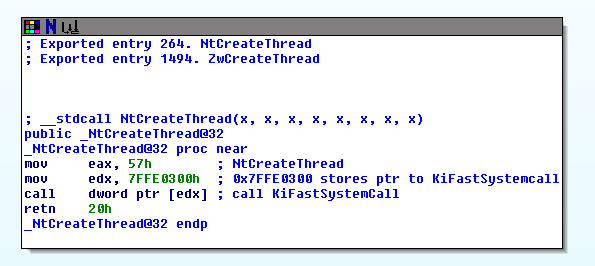
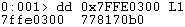
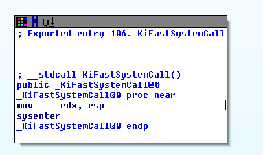
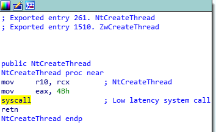

# Syscalls on Windows 7
## Windows 7 SP1 x86
On 32bit Windows 7,
Nt functions use a jump to the
KiFastSystemCall function
which will save the stack and call systenter to enter kernel mode.
Here's
NtCreateThread from Ntdll.dll on Windows 7 SP1 x86.
It:
• moves the ordinal value for NtCreateThread (from the SSDT) into EAX
• moves the hard-coded address 0x7FFE0300 into EDX
• and then calls the code pointed to by EDX (the code at 0x7FFE0300)
At
0x7FFE0300 is a memory address -
0x778170b0And at
0x778170b0 is
KiFastSystemCall.
KiFastSystemCall:
• saves the stack pointer (esp)
• and executes
systenter to enter kernel mode
## Windows 7 SP1 x64
Here's
NtCreateThread from Ntdll.dll on Windows 7 SP1 x64.
It:
• moves the syscall value for NtCreateThread -
4B - into EAX
• and runs
syscall to enter kernel mode
